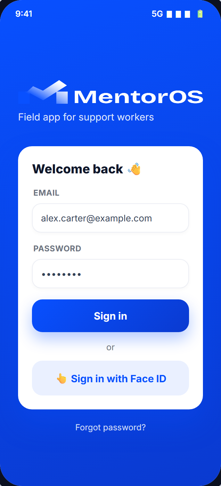
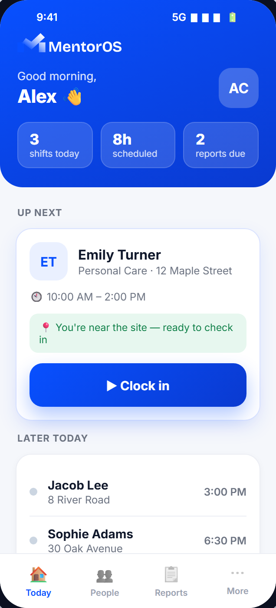
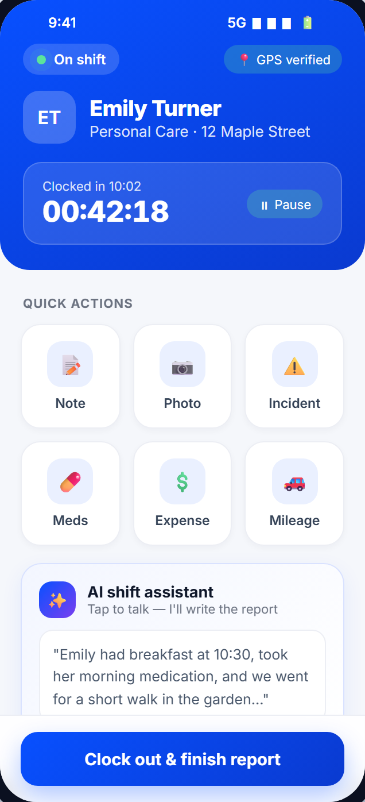
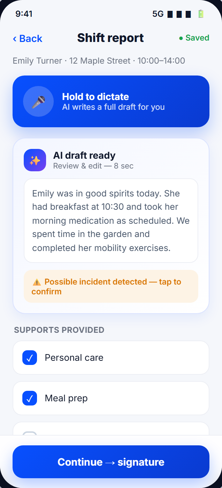
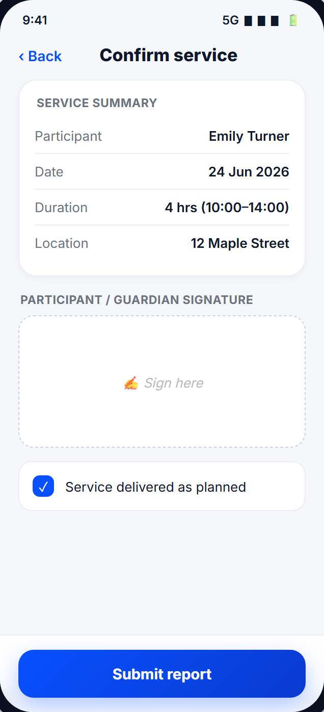
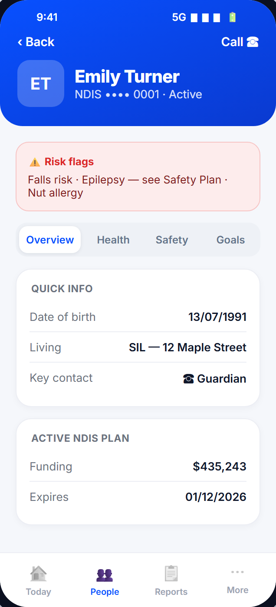
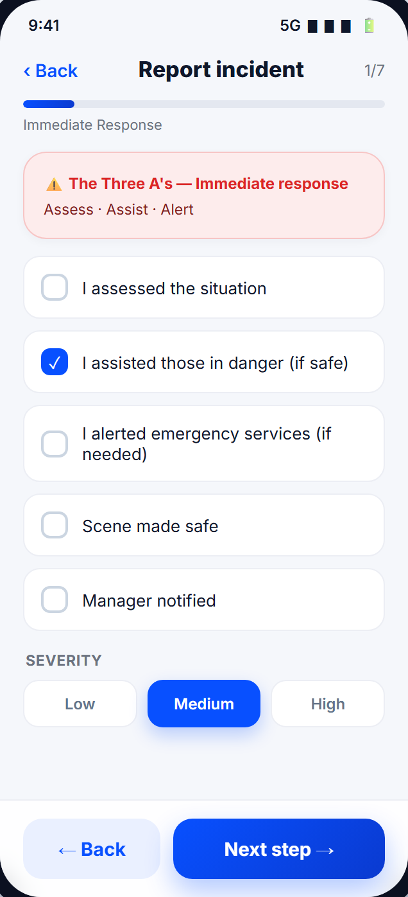
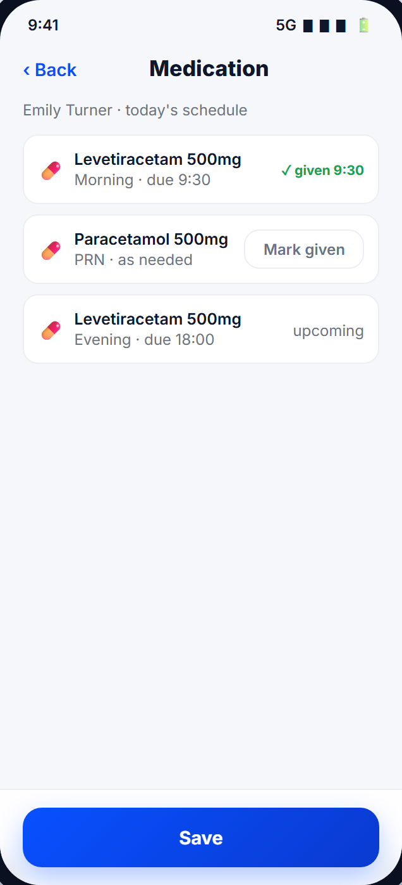
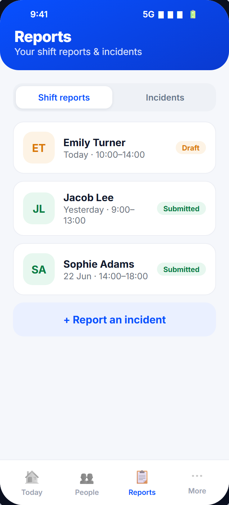
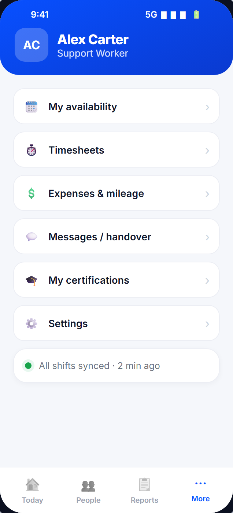

Mobile Design Proposal
Field App for Support Workers
An interactive prototype and design direction for the MentorOS mobile app — built from your real platform and benchmarked against the market.
Prepared for Australian Mentoring Services · June 2026 · Includes a live, clickable walkthrough
01 — The opportunity
Why a mobile app, and why now
MentorOS is already a complete NDIS management platform. It runs beautifully as a web dashboard for the office — but the people doing the actual work, your support workers in the field, have no dedicated mobile tool.
Your own dashboard makes the gap clear: shift-report completion currently sits at 0% (“no shift report in 7 days”). Yet almost everything downstream depends on that shift data:
- AI participant briefings & behaviour patterns are generated from shift reports
- NDIS claim evidence and compliance records rely on documented service delivery
- Care-plan suggestions build as shifts are logged
The app's single mission: make it effortless for support workers to capture shifts, notes and incidents from the field — which switches the entire platform on. It isn't “just an app”; it's the fuel that powers MentorOS.
Who it's for
Primary user: support workers / mentors on shift, often one-handed, in homes or cars, sometimes with poor signal. Every design decision serves speed, calm, trust and offline reliability.
02 — What we've designed
The screens (interactive prototype)
A complete, clickable prototype in the real MentorOS brand. Bottom navigation keeps it to four tabs: Today · People · Reports · More. Below are the key screens.

Sign in
Secure login + Face ID

Today (home)
Day at a glance + GPS clock-in

Active shift
Live timer, quick capture, AI

Shift report ★
Voice → AI writes the draft

Signature
Proof of service

Participant profile
Risk, health, meds, goals

Incident (7-step)
Your real reporting wizard

Medication
From the care plan

Reports
Drafts, submitted, incidents

More
Availability, timesheets, chat…
03 — How it actually works
A support worker's shift, end to end
1
Sign in with Face ID — fast and secure for the field.
2
Today shows the day's shifts; the next one is pinned. Tap Clock in — verified by GPS.
3
Active shift runs a live timer. One-tap capture for note, photo, meds, expense, mileage or incident — plus an AI assistant: tap to talk and it writes as you work.
4
Clock out → Shift report. Speak and AI drafts the full report. Supports & medications are pre-listed from the plan — the worker just confirms. AI auto-flags anything that looks like an incident.
5
Signature — participant or guardian signs to confirm the service (NDIS proof).
6
Submitted & synced. The participant profile, AI briefings and claim evidence all update automatically — even if it was saved offline.
Privacy by design: the AI is tap-to-talk, never always-listening — essential in a participant's home. Everything works offline and syncs when back online; the app locks behind biometrics.
04 — Grounded in your platform
What's from MentorOS vs what we're adding
Nothing here is invented. Every screen maps to real MentorOS data; we add the field experience on top.
| From MentorOS — already exists | What we're suggesting — new for mobile |
|---|
| Shifts & roster (Rostering & Service) | GPS-verified clock in/out + live timer |
| Participant profiles — health, medications, safety plan, goals, NDIS plan | Risk-first mobile layout; medications pulled into the report |
| Shift Report Register fields (supports, observations, meds, goal progress, handover) | Voice → AI writes the full draft; supports pre-listed to confirm |
| 7-step incident wizard | Mobile-optimised steps + voice + AI incident detection |
| Timesheets, payroll, expenses, site chat, compliance | One mobile “More” tab; push reminders before certs expire |
| AI briefings & care-plan suggestions | Offline-first capture that finally feeds them reliably |
05 — The market
How we compare to ShiftCare
ShiftCare is the strongest competitor. The strategy: match what's now expected, and beat it where it matters.
✓ Matched (table stakes)
- GPS clock in / out
- Voice-to-text notes
- Care plans & client details
- Digital signatures
- Expenses & mileage
- Availability & timesheets
- NDIS-aligned records
★ Where we beat it
- AI writes the full report draft — not just a transcription/summary
- AI auto-detects incidents from what you say (compliance safety net)
- Calmer, premium interface — less clutter, faster
- Each field shows where its data comes from
- MentorOS-native — one connected platform, not a bolt-on add-on
ShiftCare's app is capable but generic. Our edge is a premium, AI-first experience built directly into MentorOS — so the data flows straight back into claiming, compliance and care planning.
06 — The road ahead
What comes next
This proposal covers the core field app. Further modules build on the same foundation.
Phase 1 — Core field app (this proposal)
Sign in, Today & shifts, AI shift report, participant profiles, incidents, signatures, quick capture. The pieces that close the capture gap.
Phase 2 — Intelligence & reliability
Deeper AI (auto follow-ups, summaries, suggested care-plan updates), a full offline sync engine, and smart push notifications (new shift, cert expiry, handover).
Phase 3 — Wider ecosystem
A read-only family / guardian app for updates, richer team messaging & handover, and a training / certifications module.
Throughout — quality
WCAG AA accessibility, dark mode, biometric security, and performance — non-negotiables for this sector.
07 — Next steps
Where to from here
- Explore the live prototype — open the shared link and tap through the app + guided walkthrough.
- Confirm the shift-report fields with your NDIS / compliance lead so the data matches your audit requirements exactly.
- Sign off the design direction — then we move to build.
- Recommended build: Flutter for one premium codebase across iOS & Android, with offline-first sync into MentorOS.
In one line: a premium, AI-first mobile app that makes capturing shifts effortless — closing the 0% gap and powering everything MentorOS already does.
Thank you. We'd love to walk you through the prototype live.